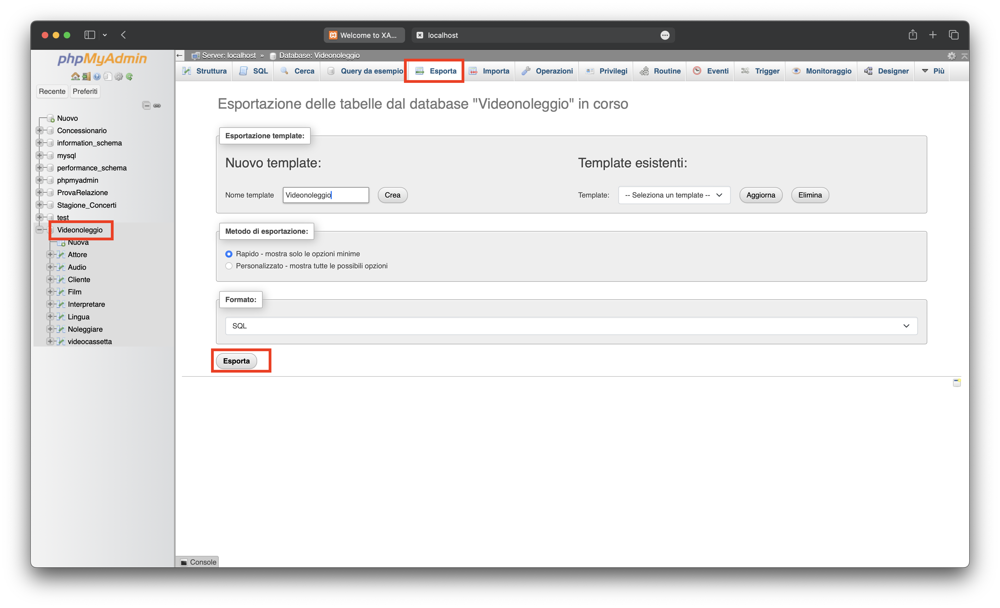
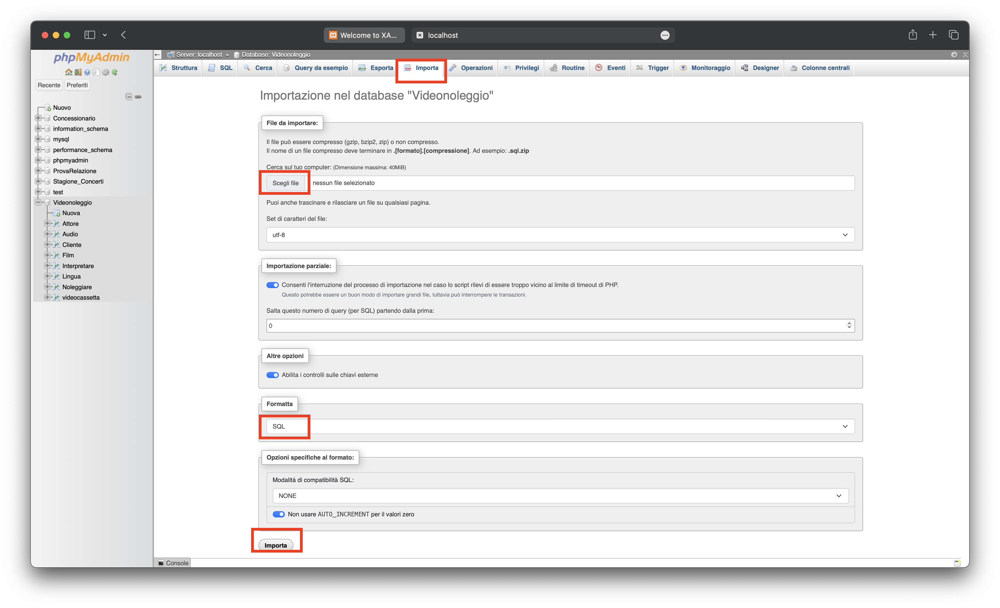

Modalità di Esportazione e Importazione del file
I database creati con EasyPHP/XAMPP possono essere trasferiti su altri computer. Per effettuare questa operazione, è necessario esportarli dal nostro computer. Per farlo, segui questi passaggi:
- 1. Apri EasyPHP/XAMPP e seleziona il database desiderato dal menù a sinistra.
- 2. Clicca sul nome del database per aprirlo.
- 3. Nella parte superiore, troverai la sezione "Esporta". Fai clic su di essa.
- 4. Lascia le impostazioni di default o personalizzale secondo le tue esigenze.
- 5.Fai clic su "Esegui" per avviare il processo di esportazione.

Dopo aver esportato il database e scelto il percorso di salvataggio del file, per trasferirlo su un nuovo computer e importarlo, segui questi passaggi:
- 1. Trasferisci il file di esportazione del database sul nuovo computer.
- 2. Sul nuovo computer, apri EasyPHP/XAMPP e crea un nuovo database con lo stesso nome del file che hai esportato.
- 3. Nel menù in alto, fai clic su "Importa".
- 4. Accanto alla scritta "Cerca sul tuo computer:", fai clic sul pulsante "Scegli file" e seleziona il file del database che hai trasferito.
- 5. Una volta selezionato il file, fai clic su "Esegui" per avviare il processo di importazione.
